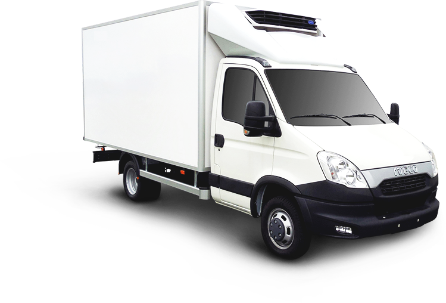
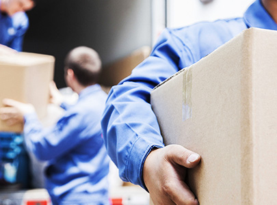
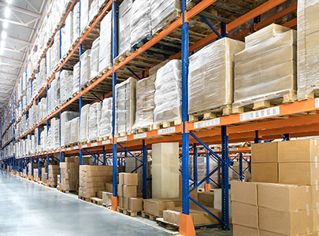
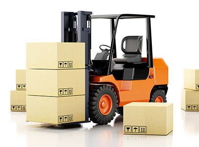
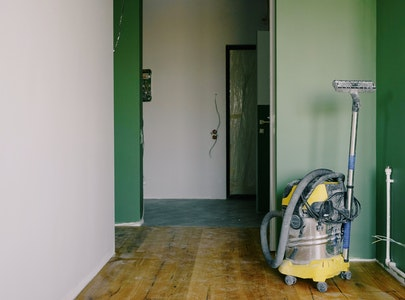

София +359 883 36 56 75
решението за вашия
Независимо от метеорологичните условия, покритото товарно отделение осигурява надеждна защита на Вашия товар от дъжд, вятър и външни въздействия, гарантирайки неговото безопасно транспортиране.
С товароподемност до 600 кг, подвижният борд осигурява лесно и удобно товарене и разтоварване на тежки и обемисти товари, като значително улеснява процеса и спестява време и усилия.
Оборудвани сме с палетна количка, която улеснява преместването и обработката на палетизирани и обемисти товари. Тя осигурява по-голяма маневреност, удобство и ефективност при товаро-разтоварните дейности.

Автомобилът разполага с покрит товарен отсек и подвижен товарен борд. Товарният борд е с товароподемност 600 кг. Като автомобилът разполага и с палетна количка, за товаренето на палети. За да придобиете представа за размерите на товарния отсек и дали те ще отговорят на Вашите нужди, Ви предоставяме и размерите на товарния отсек:

Имате нужда от транспорт на тежки или обемисти мебели? TransPro предлага сигурно и удобно решение с помощта на товарна платформа с товароподемност до 600 кг, осигуряваща лесно товарене и разтоварване. При необходимост предлагаме и помощен персонал за пренасяне и товарене на Вашите мебели.

Предлагаме професионални транспортни услуги за превоз на обемисто, тежко и специфично фирмено оборудване, което изисква специално внимание при товарене, транспортиране и разтоварване. Извършваме транспорт на:
За Ваше допълнително удобство предлагаме и възможност за осигуряване на помощен персонал, който да съдейства при товаренето, пренасянето и разтоварването.

Вашият бизнес произвежда или предлага готова продукция, чието транспортиране от или до Вашия търговски или производствен обект представлява предизвикателство? TransPro предлага надеждно решение!
Специализирани сме в транспортните услуги за производители, търговци на едро и ритейлъри, които имат нужда от сигурен и професионален превоз на обемисти и тежки товари.
Разполагаме с необходимия транспорт и оборудване за превоз на различни видове товари – както палетизирани пратки, така и отделни обемни модули и нестандартни товари.
Независимо дали става въпрос за регулярни доставки, транспортиране на готова продукция или преместване на стоки между обекти, ние осигуряваме гъвкава организация и индивидуален подход към всяка транспортна задача.
С TransPro получавате надежден транспортен партньор, който разбира нуждите на Вашия бизнес и се грижи товарът Ви да достигне безопасно и навреме до крайната си дестинация.

Имате нужда от основно почистване, освобождаване на пространство или извозване на ненужни вещи и отпадъци?
TransPro е насреща, за да Ви помогне!
Предлагаме професионални почистващи услуги за частни домове, дворове, гаражи, складове и други помещения. Поемаме цялостната организация по почистването, събирането, изнасянето и извозването на ненужни вещи и отпадъци.
Нашите услуги включват:
Независимо дали става въпрос за еднократно почистване, разчистване след ремонт или цялостно освобождаване на помещение, ние ще се погрижим за всичко с внимание и коректност.
С TransPro спестявате време, усилия и излишни притеснения. Ние почистваме, изнасяме и извозваме, за да се радвате на чисто и свободно пространство!
Свържете се с нас, за да получите индивидуална оферта.